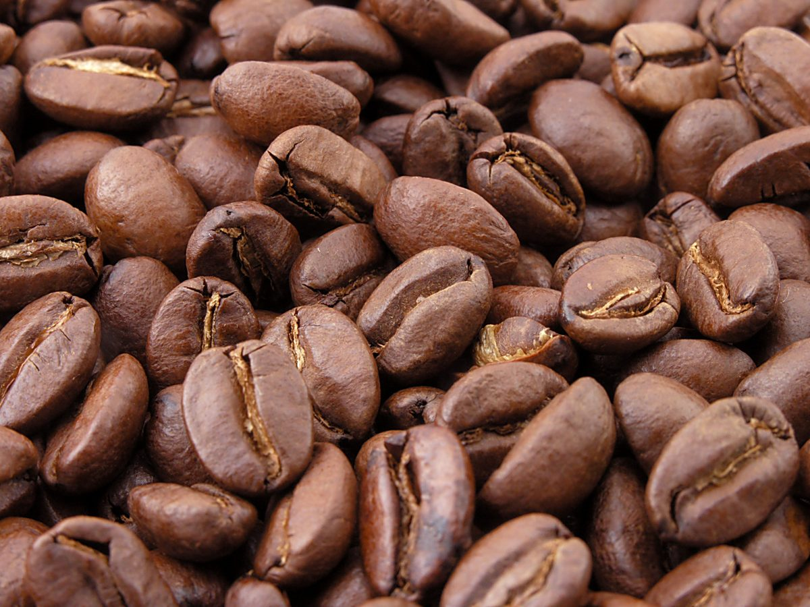

制作側の連想
三つのトレーで、選り分ける
店名の由来は分かりません。このページのテーマ「ハンドピックの三つのトレー」は、コーヒー専門という業種から制作側が連想したもので、お店の理念・由来とは無関係です。生豆から欠点のある豆を取り除く作業を「ハンドピック」と呼ぶことがあり、このサイトではそれになぞらえて、写真や情報を三つのトレーに選り分けて並べています。お店の実際の作業や提供内容を示すものではありません。
トレーA
豆と杯
お店のコーヒーではなく、イメージとして選んだ国外・撮影地不明のフリー素材です。



ご案内
お店のこと(確認できたものだけ)
| 所在地 | 〒489-0807 愛知県瀬戸市西吉田町29−１６ |
|---|---|
| 電話 | なし |
| 営業時間 | 準備中 |
| 定休日 | 準備中 |
| ご予約 | 準備中 |
| 駐車場 | 準備中 |
| SNS | Instagram @fusa.coffee |